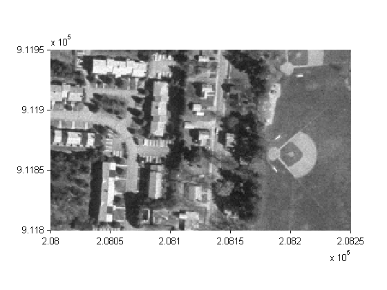
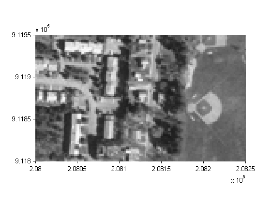
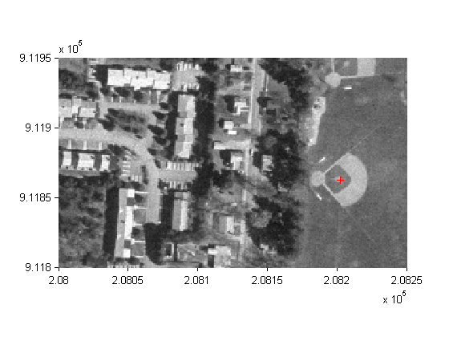
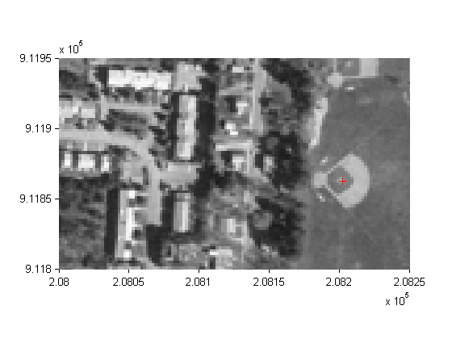

Creating a Half-Resolution Georeferenced Image
A referencing object allows you to spatially orient an image. The following example shows how to create a half-resolution version of a georeferenced TIFF image, using referencing objects and Image Processing Toolbox™ functions ind2gray and imresize.
Contents
Step 1: Import a Georeferenced TIFF Image
Read an indexed-color TIFF image and convert it to grayscale. The size of the image is 2000-by-2000.
[X, cmap] = imread('concord_ortho_w.tif');
I_orig = ind2gray(X, cmap);
Read the corresponding worldfile. Each image pixel covers a one-meter square on the map.
R_orig = worldfileread('concord_ortho_w.tfw','planar',size(X));
Choose a convenient format for displaying the result.
currentFormat = get(0,'format'); format short g R_orig
R_orig =
<a href="matlab:help spatialref.MapRasterReference">spatialref.MapRasterReference</a>
Package: spatialref
Properties:
XLimWorld: [207000 209000]
YLimWorld: [911000 913000]
RasterSize: [2000 2000]
RasterInterpretation: 'cells'
ColumnsStartFrom: 'north'
RowsStartFrom: 'west'
DeltaX: 1
DeltaY: -1
RasterWidthInWorld: 2000
RasterHeightInWorld: 2000
XLimIntrinsic: [0.5 2000.5]
YLimIntrinsic: [0.5 2000.5]
TransformationType: 'rectilinear'
CoordinateSystemType: 'planar'
<a href="matlab:methods('spatialref.MapRasterReference')">Methods</a>
Step 2: Resize the Image to Half Its Original Size
Halve the resolution, creating a smaller (1000-by-1000) image.
I_half = imresize(I_orig, size(I_orig)/2, 'bicubic');
Step 3: Construct a Referencing Object for the Resized Image
The resized image has the same limits as the original, just a smaller size, so copy the referencing object and reset its RasterSize property.
R_half = R_orig; R_half.RasterSize = size(I_half)
R_half =
<a href="matlab:help spatialref.MapRasterReference">spatialref.MapRasterReference</a>
Package: spatialref
Properties:
XLimWorld: [207000 209000]
YLimWorld: [911000 913000]
RasterSize: [1000 1000]
RasterInterpretation: 'cells'
ColumnsStartFrom: 'north'
RowsStartFrom: 'west'
DeltaX: 2
DeltaY: -2
RasterWidthInWorld: 2000
RasterHeightInWorld: 2000
XLimIntrinsic: [0.5 1000.5]
YLimIntrinsic: [0.5 1000.5]
TransformationType: 'rectilinear'
CoordinateSystemType: 'planar'
<a href="matlab:methods('spatialref.MapRasterReference')">Methods</a>
Step 4: Visualize the Results
Display each image in map coordinates.
figure h1 = mapshow(I_orig,R_orig); ax1 = get(h1,'Parent'); set(ax1, 'XLim', [208000 208250], 'YLim', [911800 911950],'TickDir','out') figure h2 = mapshow(I_half,R_half); ax2 = get(h2,'Parent'); set(ax2, 'XLim', [208000 208250], 'YLim', [911800 911950],'TickDir','out') 
Mark the same map location on top of each image.
x = 208202.21; y = 911862.70; line(x, y, 'Parent', ax1, 'Marker', '+', 'MarkerEdgeColor', 'r'); line(x, y, 'Parent', ax2, 'Marker', '+', 'MarkerEdgeColor', 'r'); 
Graphically, they coincide, even though the same map location corresponds to two different locations in intrinsic coordinates.
[xIntrinsic1, yIntrinsic1] = R_orig.worldToIntrinsic(x, y)
xIntrinsic1 =
1202.7
yIntrinsic1 =
1137.8
[xIntrinsic2, yIntrinsic2] = R_half.worldToIntrinsic(x, y) format(currentFormat);
xIntrinsic2 =
601.6
yIntrinsic2 =
569.15
Credits
concord_ortho_w.tif, concord_ortho_w.tfw - derived from orthophoto tiles from:
Office of Geographic and Environmental Information (MassGIS), Commonwealth of Massachusetts Executive Office of Environmental Affairs http://www.state.ma.us/mgis
For more information, run:
>> type concord_ortho.txt